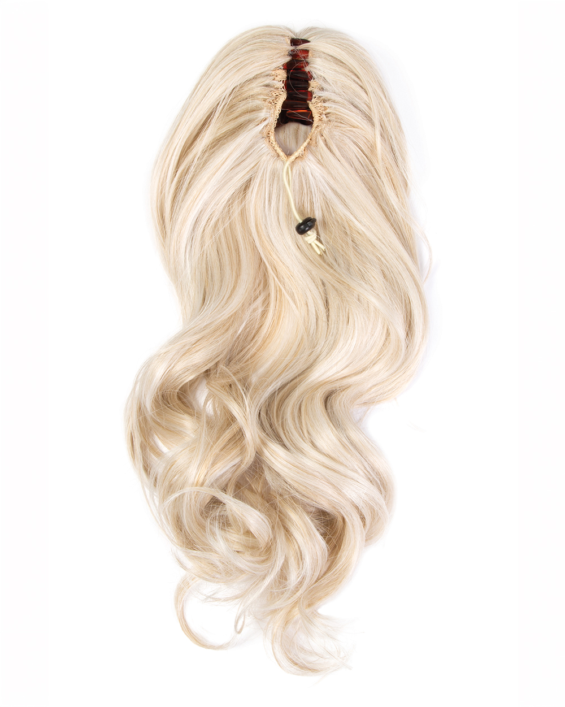
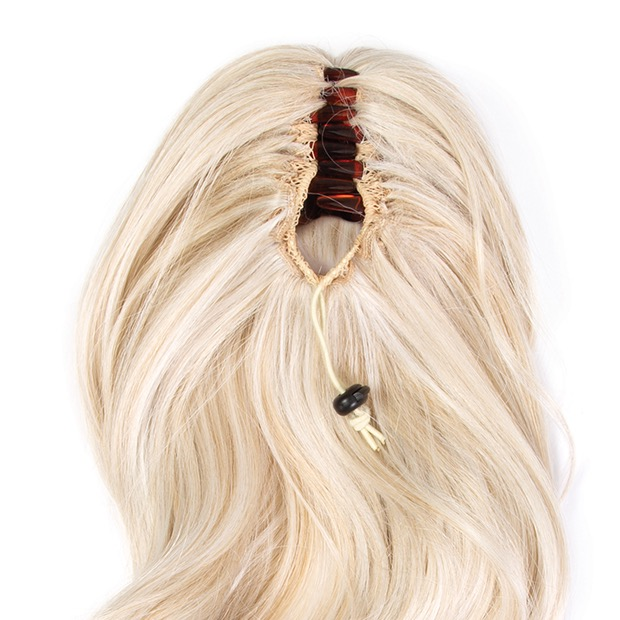
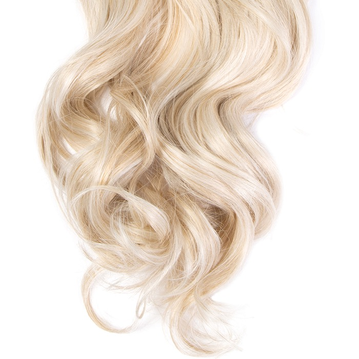
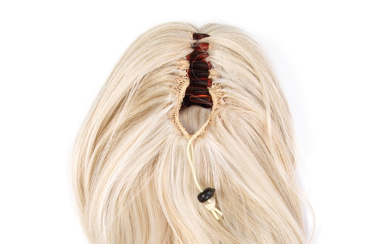
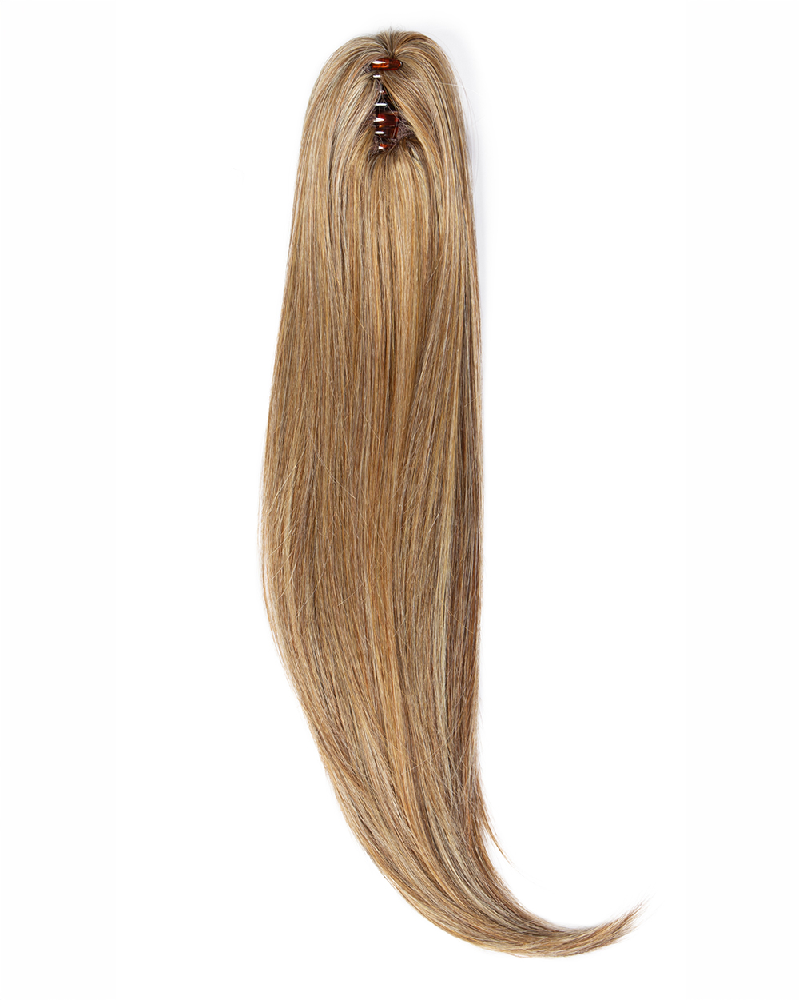
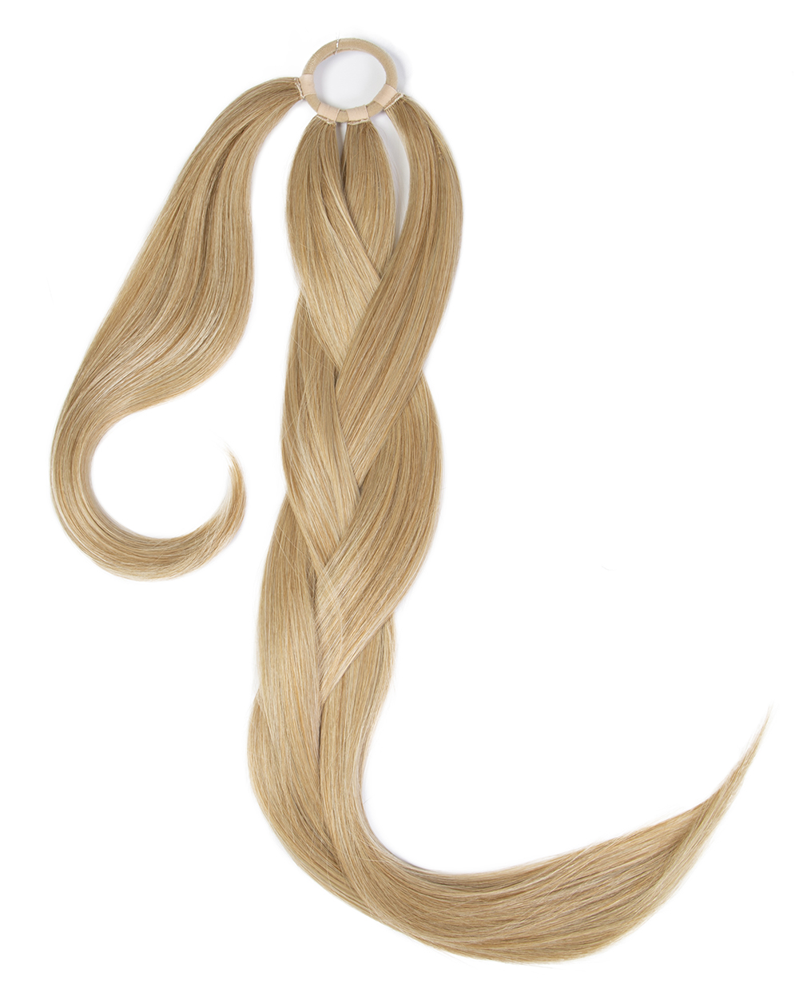

Claw-clip security
Test tooth geometry, spring force, attachment stitching and hold during normal head movement.




DS HAIR · Synthetic Wigs & Hairpieces
PRODUCT CODE · DS-HPC-SY-003
A long, soft-curl claw-clip ponytail reference for professional buyers developing quick-application synthetic hairpiece ranges. The source page documents a 21-inch style, flowing curls, a secure claw-clip attachment and a heat-friendly synthetic fibre direction. DS HAIR production fibre, finished weight, clip specification, colour range, heat protocol, tolerances and commercial terms remain subject to sample approval and written specification.
Commercial terms and unconfirmed technical details are provided only after specification review.
BUILD YOUR BUYING BRIEF
These controls prepare an enquiry; they do not indicate live stock. Final feasibility, MOQ, price and lead time are confirmed in writing.
PRIMARY COLOUR SYSTEM
Screen colour is for initial selection only. Final shade approval should use a physical colour ring or confirmed sample. Where the source chart has no published shade code, Ref numbers are temporary website identifiers only.
REQUEST A PHYSICAL COLOUR KIT →BUYER ANSWER
A long, soft-curl claw-clip ponytail reference for professional buyers developing quick-application synthetic hairpiece ranges. The source page documents a 21-inch style, flowing curls, a secure claw-clip attachment and a heat-friendly synthetic fibre direction. DS HAIR production fibre, finished weight, clip specification, colour range, heat protocol, tolerances and commercial terms remain subject to sample approval and written specification.
EVALUATION POINTS
Use a representative sample to turn visual impressions into an approved, repeatable product reference.
Test tooth geometry, spring force, attachment stitching and hold during normal head movement.
Measure the finished 21-inch reference consistently and approve where the curls finish on the target wearer.
Review curl diameter, distribution, separation, end finish and pattern recovery after packing and brushing.
Approve shine, hand, tangling and a tested heat-care protocol on the actual DS HAIR production fibre.
Approve root, mid-length and curl-end blending under neutral light with a physical shade reference.
ATTACHMENT COMPARISON
A claw clip prioritises fast application; wrap and drawstring systems create different fit, concealment and handling requirements.
Scroll horizontally to compare methods →
| Buyer question | Claw-Clip Ponytail | Wrap Ponytail | Drawstring Ponytail | Clip-In Chignon |
|---|---|---|---|---|
| Primary result | Fast length with a lifted base | Wrapped finish around a natural ponytail | Adjustable gathered-base length | Compact updo volume |
| Attachment | Contoured claw clip | Wrap panel with securing element | Drawstring and comb or clip | Claw clip or compact attachment |
| Key buyer check | Clip security and base coverage | Wrap length and closure finish | Cord, comb and base comfort | Attachment visibility and silhouette |
| Sample focus | Hold, curl fall, weight and blend | Wrap control and natural-hair coverage | Adjustment, comfort and movement | Shape retention and attachment hold |
Attachment design changes security, comfort and how natural hair is concealed. Approve the complete base and clip system, not the curl appearance alone.
THE DS HAIR DIFFERENCE
We compare the way a project is managed—not make unverified statements about another supplier’s hair.
SPECIFICATION STATUS
DS HAIR does not publish assumptions as product specifications. Open items are confirmed against the selected supply batch and quotation.
OEM / PRIVATE LABEL
PROFESSIONAL PRODUCT KNOWLEDGE
Practical guidance for salons, distributors and private-label teams. Product-specific claims still require sample approval.
It is a removable ponytail built around a clip that grips a secured natural ponytail or bun. The source reference combines a 21-inch curled fall with a claw-clip attachment.
Check curve, tooth geometry, spring force, coating, colour, attachment stitching and how the base conceals the wearer’s natural hair.
Record curl diameter, pattern placement, end finish, fibre shine and recovery after packing, brushing and the approved care routine.
Only within the tested protocol for the actual production fibre. The source describes heat-friendly styling, but DS HAIR must validate its own sample before publishing a temperature limit.
Retain an approved sample and written specification covering fibre, length, grams, curl pattern, clip, base, colour, care wording, packaging and QC tolerances.
RELATED DEVELOPMENT DIRECTIONS
These are enquiry pathways, not live-stock listings. Each product requires its own specification and sample reference.

A softly waved synthetic chignon reference for professional buyers developing quick updo, bun and occasion-hair ranges. The photographed reference uses a contoured claw clip; production fibre, colour, hardware and commercial terms are confirmed against the approved sample and written specification.
DISCUSS THIS PRODUCT →
A long, straight one-piece clip-in reference for professional buyers developing instant-length and volume ranges. The source reference documents a 22-inch length, an 11 × 6.5-inch base, seven pressure-sensitive clips and a 3.7 oz finished weight. DS HAIR production fibre, heat protocol, colours, tolerances and commercial terms remain subject to sample approval and written specification.
DISCUSS THIS PRODUCT →
A long, straight claw-clip ponytail reference for professional buyers developing quick-application synthetic hairpiece ranges. The source page documents a 21-inch sleek style, secure claw-clip attachment and heat-friendly synthetic fibre direction. DS HAIR production fibre, finished weight, clip specification, colour range, heat protocol, tolerances and commercial terms remain subject to sample approval and written specification.
DISCUSS THIS PRODUCT →
A 26-inch elastic-band ponytail reference for professional buyers developing braid-ready synthetic hairpiece ranges. The source page documents a long straight fibre section that can be braided with the wearer's hair or twisted into a braided updo, plus a shorter wrap section that conceals the attachment. DS HAIR production fibre, finished weight, elastic specification, colour range, heat protocol, tolerances and commercial terms remain subject to sample approval and written specification.
DISCUSS THIS PRODUCT →BUYER QUESTIONS
It is presented as a B2B development reference. Share the target market, quantity, colour direction, fibre requirement and packaging brief so feasibility and commercial terms can be confirmed.
The source product uses a secure claw clip. DS HAIR production clip dimensions, spring force, tooth finish and holding performance require sample approval.
The source page states a 21-inch length with soft, flowing curls. Finished measurement tolerance and curl-state measurement are confirmed on the production sample.
The source describes heat-friendly synthetic hair. That is not automatically a DS HAIR production claim; the selected fibre and sample must pass a documented heat test first.
Colour matching and private-label presentation can be reviewed against physical references, artwork and quantity requirements. Available options and minimums require written confirmation.
REFERENCE · DS-HPC-SY-003
Send the target wearer, length, grams, curl direction, clip requirement, colour reference, fibre requirement, packaging brief and estimated quantity so DS HAIR can prepare the correct sample path.
SEND YOUR BUYING BRIEF